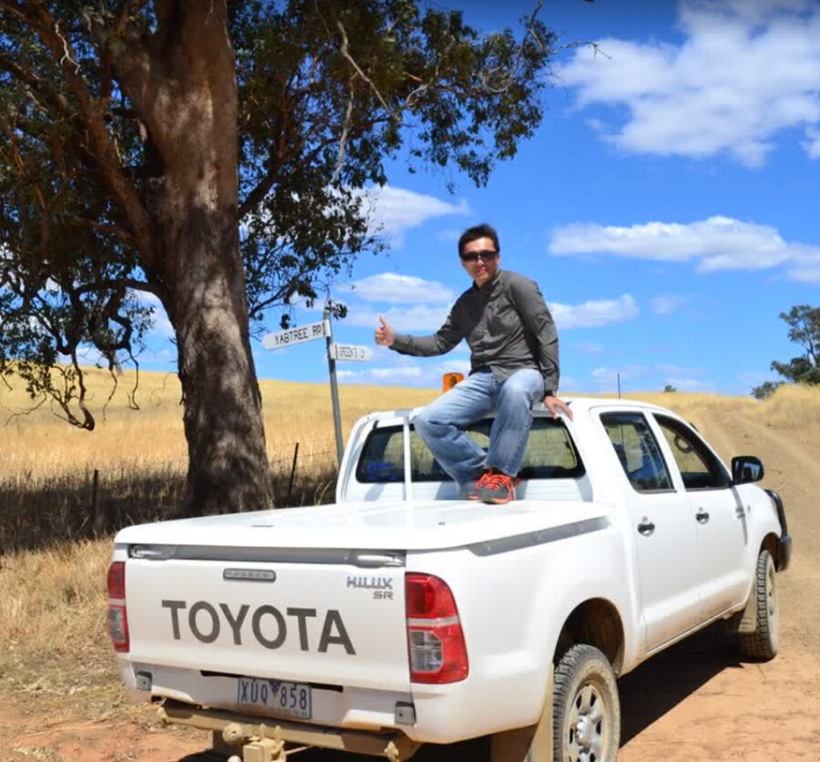

Spatial Data Scientist · Brisbane, Australia
End-to-end consulting across spatial analytics, transport data, urban growth modelling, and open-source data engineering. Over a decade bridging GIS, mobility data, and modern cloud-native pipelines across government and industry.
My footprint 2013–2025
↑ Built from Google Timeline data · 30 Day Map Challenge 2025 Day 4 · R + Mapdeck
What I do
GIS workflows, raster analysis, land suitability modelling, PostGIS, R/Python spatial pipelines.
GTFS processing, trip planning data, public transport analytics, mobility insights at scale.
Urban growth modelling (BrisUrban), 3D city visualisation, land use and activity datasets.
Cloud pipelines, Apache Spark/Sedona, R/Python packages, large-scale geospatial data processing.
Career chapters
Brisbane City Council · City Plan and Design
DSpark (Optus) · Macquarie Park, Sydney
Stack evolution — the open-source pivot
Before (2013–2018)
After (2019–present)
Career locations
Selected work
Google Timeline · R + Maglibre + Claude Code
Google Timeline · R + Mapdeck
Overture Maps · R + Mapdeck
3D · R + deck.gl
R + MapGL
Time & Space · R + MapGL
R Shiny dashboard · Brisbane GTFS on Hugging Face
Stop-level boarding analysis · R + MapGL
wilsonyungsh.github.io